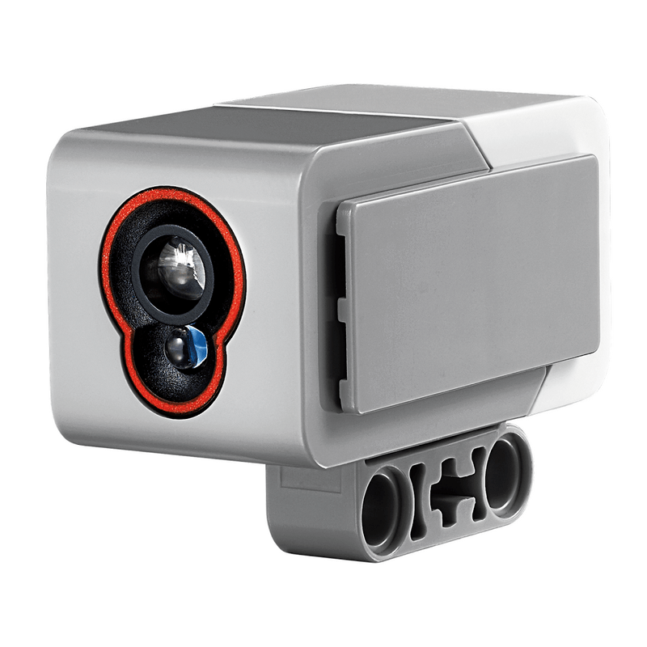

Svetelný senzor
Dnes si ukážeme ďalší senzor, pomocou ktorého budeme vedieť rozlišovať farby predmetov a zisťovať intenzitu svetla. Aby sme si ho prakticky vyskúšali, vymeníme dotykový senzor z minulej lekcie za svetelný senzor, ktorý bude otočený smerom do zeme a umiestnený na prednej strane robota v strede, asi 1.5 cm od zeme (spodná časť senzoru). Tentokrát to skúste bez návodu :)

Ako funguje svetelný senzor?
Tento senzor má v sebe tri svetelné diódy: červenú, zelenú a modrú. Sú to tri základné farby v počítačovej grafike, ktorých miešaním vieme vytvoriť ostatné farby. A senzor tiež obsahuje svetelný prijímač, ktorý zistí intenzitu dopadajúceho svetla. Ak chceme rozlíšiť farbu predmetu pred senzorom, krátko sa rozsvieti každá z troch svetelných diód a zmeria sa odrazené svetlo. Tieto hodnoty sa potom dajú dokopy a senzor výsledok vyhodnotí ako jednu zo 7 farieb: čierna, modrá, zelená, žltá, červená, biela a hnedá. Alebo "žiadna" farba, ak napr. pred senzorom žiaden objekt v blízkosti nie je, len vzduch.
Ako svetelný senzor použijeme v programe?
V moduli ev3devices existuje trieda ColorSensor. Na objektoch tejto triedy
budeme volať metódy:
color: vráti farbu objektuColor.BLACK,Color.BLUE, ..., aleboNonepre žiadnu farbu (Colorpochádza z moduluparameters).ambient: vráti intenzitu (číslo medzi 0 a 100) svetla z okolia.reflection: akoambient, ale pre odrazené svetlo, to znamená, že senzor krátko zasvieti a zmeria intentzitu až potom.rgb: vráti intenzitu každej zložky svetla, červenej (red), zelenej (green) a modrej (blue) ako n-ticu (tuple).
tuple
tuple je nový dátový tip, s ktorým sme sa ešte nestretli. Je podobný zoznamu, až na to, že sa nedá meniť. Namiesto hranatých zátvoriek sa zapisuje pomocou okrúhlych. Je užitočný ak viacero hodnôt patrí úzko ku sebe.
Príklad
Naprogramujeme si robota tak, aby chodil po čiernej čiare. Predstavme si, že všade okolo je biela zem a len jedna kľukatá čierna čiara, hrubá asi 1.5 cm. Ak robota postavíme na začiatok čiary tak, aby svetelný senzor snímal pravý okraj čiary a pustíme ho rovno vpred, bude sa môcť riadiť ďalej týmito pravidlami:
- Nasníma nižšiu intenzitu svetla -- to znamená, že je na zákrute vpravo, senzor sa dostal z okraju čiary viac do stredu a preto "vidí" viac čiernej farby (teda menej intenzity svetla).
- Naopak, keď nasníma vyššiu intenzitu sveta, tak čiara musí byť naľavo, robot sa dostal od čiary preč, na bielu plochu okolo.
Poďla toho sa pootočí na stranu, kde pokračuje čiara.
Číselné hodnoty v kóde sú závislé na konkrétnom prostredí, kde púšťame
robota. Je vhodné si najprv zistiť, akú intenzitu svetla robot vníma
na bielej a čiernej čiare a podľa toho nastaviť WHITE a BLACK tak, aby
WHITE bola hodnota, keď sa robot dostane kúsok mimo čiary, a BLACK
keď sa robot (svetelný senzor na ňom) dostane príliš dovnútra čiernej
čiary. Nastaviť dobré hodnoty môže chvíľu trvať.
Úloha 1
Pripravte si dráhu, na ktorej budete robota chodiaceho po čiare testovať. Mohli by stačiť veľké biele papere a čierna elektroizolačná páska. Nastavte hodnoty v programe tak, aby robot zvládol po čiare prejsť.
Úloha 2
Upravte program tak, aby robot mohol začínať na ľavej a nie pravej strane čiary. Teda nebude sledovať pravý okraj, ale ľavý.
Úloha 3
Toto je ťažká úloha. Ale dá sa vyriešiť a človekovi uľahčí prácu --
automatické nastavenie hodnôt BLACK a WHITE. Robota bude stačiť
na začiatku postaviť na čiaru, otočeného tak, aby svetelný senzor bol
nad bielou plochou. Robot nasníma hodnotu bielej farby a pomaly sa bude
otáčať na mieste a sledovať stále intenzitu svetla. Keď nadíde na čiernu
čiaru, intenzita sa zníži, robot si zapamätá jej minimum, lebo potom
sa znovu začne zvyšovať, robot prejde cez stred čiary a otáča sa ďalej.
Pomocou týchto dvoch hodnôt sa potom určia hodnoty BLACK a WHITE.
(Vlastne, už by sme ich nemali písať veľkými písmenami, lebo to nebudú
konštanty.) Ale pozor, nemôžeme ich jednoducho nastaviť na práve tú nameranú
hodnotu, to by nefungovalo (prečo?).
Riešenie úlohy 3
while
cyklu načíta intenzitu odrazeného svetla. Ak je už vyššia ako tá
predošlá, znamená to, že je niekde blízko stredu čiary, kúsok za stredom,
a vtedy zastaví.
Červená, stáť!
Ako sme už hovorili, svetelný senzor dokáže viac než len odmerať intenzitu
dopadajúceho svetla. Vie odlíšiť aj niekoľko bežných farieb. My si teraz
vylepšíme našeho robota, aby zastavil na červenej značke. Len upravíme náš
už existujúci program -- jeho nekonečný while cyklus:
Hneď na začiatku každého opakovania robot vyskúša, či nabehol na červenú značku,
ak áno, cez break "vyskočí" von z nekonečného cyklu a pokračuje za ním, teda
na riadku s move( 0, 0 ). Ešte potrebujeme naimportovať triedu Color,
ktorú sme doteraz nevyužívali:
Vyskúšajte, či program funguje :)
Úloha 1
Použite ďalšiu značku, napr. modrú, na ktorú keď robot nadíde, otočí sa na mieste a bude pokračovať po čiare naspäť, z kade prišiel.
Úloha 2
Upravte svoju trénovaciu plochu s čiarou tak, aby na niektorých miestach bola čiara prerušená. Pridajte robotovi aj druhý svetelný senzor, tentokrát si bude udržovať čiernu čiaru medzi dvomi senzormi. Nedávajte ich teda od seba veľmi ďaleko. Výhoda použitia dvoch senzorov je, že robot dokáže sledovať cestu aj s vynechanými úsekmi čiary. Logiku programu budete musieť ale úplne zmeniť.